Figurant en 2ème position dans le palmarès mondial de la gastronomie en 2017 par le blog britannique Worldsim Travel, le Maroc vous offre une escapade culinaire exceptionnelle. Marrakech, Fès, Agadir, ou encore Rabat, font partie des destinations culinaires les plus alléchantes. Plus de 15 restaurants marocains figurent parmi les 1000 meilleures tables au monde figurant au classement de « La Liste ». Thé à la menthe, Tajine, Couscous, ou Pastilla, voici les meilleures spécialités que vous pouvez déguster avec un goût de reviens-y.
Généralement servies en début des repas, les entrées marocaines sont présentées comme accompagnement d’un plat principal. Elles diffèrent d’une région à une autre, mais se composent généralement d’une salade marocaine de légumes crus ou cuits, des Briouates farcies au poulet ou à la viande hachée, d’une ratatouille de poivrons et de tomates que nous appelons Tektouta et du fameux Zaâlouk qui est une purée d'aubergines. Elles peuvent être assaisonnées différemment, mais chaque recette apporte sa propre saveur et sa propre couleur.
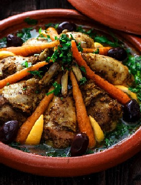Le tajine |
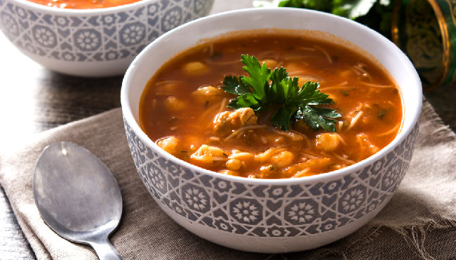La Harira |
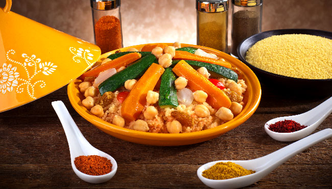Le couscous |
C’est le plat le plus répandu au Maroc. D’un mode de cuisson très particulier, et aux versions multiples, ce plat n’en finit pas de ravir les goûts les plus exigeants. Les aliments comme le poisson, poulet, viande, légumes, et parfois noix, pruneaux et abricots, cuisent à l'étouffée avec un jeu indispensable d’épices pour le parfumer.
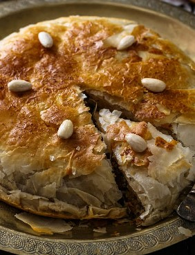La pastilla |
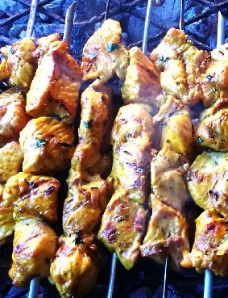Le méchoui |
Ce plat hérité de la culture turque, est une façon de cuisiner traditionnellement l’agneau ou le bœuf qui sont souvent cuits à l’étouffée dans un four en argile.
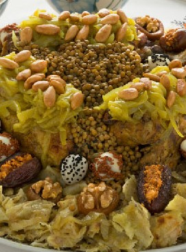La R’fissa |
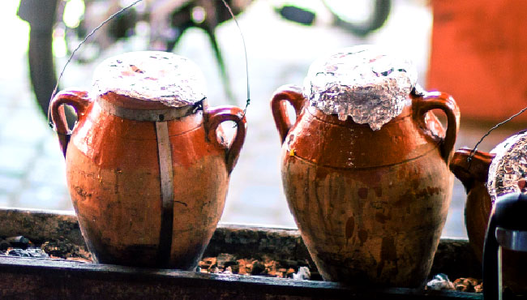La Tanjia |
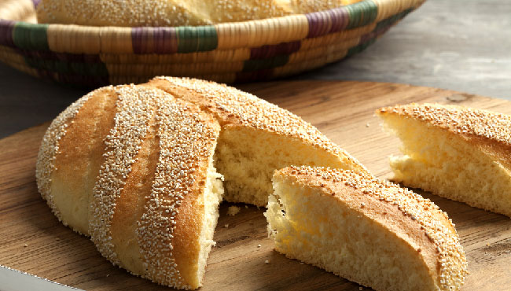Le pain |
Egalement appelée « Trid », ce plat à base de crêpes feuilletées marocaines ou msemmens, à base de poulet accompagnée d'un bouillon d'oignons, coriandre, ras el hanout, lentilles et fenugrec. R'fissa est très riche en saveurs et en épices. Originaire de Casablanca, la R’fissa est une tradition culinaire des plus profondes.
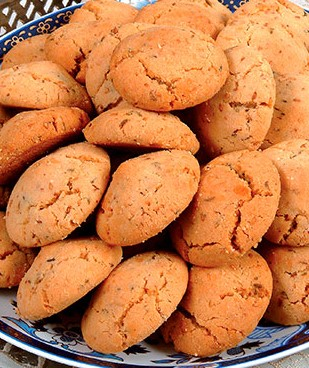Ghriba |
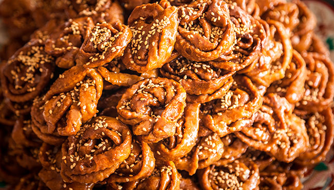Chebakia |
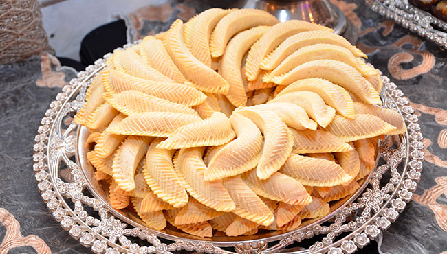Cornes de gazelle |
Ces gâteaux arrivent aussi en tête de la pâtisserie issue de la cuisine maghrébine et orientale. En ville, vous en trouverez dans les pâtisseries, mais aussi dans les petites échoppes des médinas. Faites à base d’amandes et de semoule, elles sont souvent saupoudrées de graines de sésame pour plus de saveur.
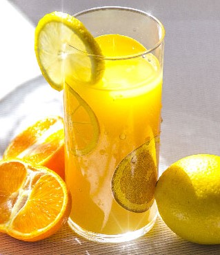Jus de fruits |
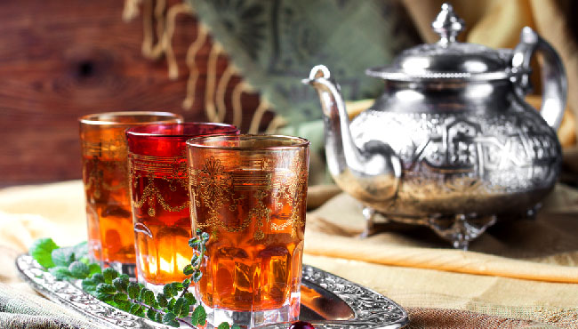Thé à la menthe |
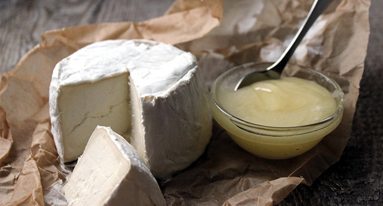Délices laitiers |
De nombreux échoppes vous proposent des jus de fruits frais que vous pouvez composer à votre goût ! A Marrakech, la place Jemaa-El-Fena, à elle seule, abrite plus d’une vingtaines de vendeurs de jus de fruits, d’eau et de sodas organisés en calèches.